"26岁的子涵正处于人生的间隔年，独自在上海生活。早在2019年播客尚属小众时，她就已经是忠实听众，播客早已不是单纯的内容产品，而是她独处时的'默认背景音'。"
根据CNNIC第55次《中国互联网络发展状况统计报告》，截至2025年12月，我国手机网民规模达10.96亿，手机上网比例高达99.6%，网民几乎全天候被锁死在移动端终端里。与此相伴的是注意力的高度碎片化：全网用户月人均使用App数量约29.4个，内容竞争的底层逻辑变成了残酷的"下一次点击"争夺战——每一秒都在争夺用户的停留，每一个内容都必须在3秒内抓住眼球。
短视频
30.9%
其他
28.8%
即时通讯
17.9%
在线视频
7.3%
综合资讯
5.6%
综合电商
4.2%
社区交友
2.9%
在线阅读
2.2%
数据来源：QuestMobile 2026年2月移动互联网月度监测数据
* 圆的大小代表各内容形态占据的用户注意力份额 · 点击查看详细比例
微短剧的爆发正是这种逻辑的极致体现。截至2025年底，国内微短剧用户规模已达6.64亿，网民使用率约59%，人均单日收看时长达到129分钟，正式超越长视频，位列网络视听细分应用第二。这种极端轻量化的叙事，用密集的冲突、反转和爽点重构了用户的内容耐受度，也带来了普遍的"注意力赤字"：人们习惯了碎片单元的快速输入，越来越难维持长时间的深度专注；信息密度越来越高，但连续的叙事、完整的逻辑、稳定的情感连接却被挤压出局。
越来越多的信息、娱乐和叙事被压缩为"碎片单元"，快速地进入人们的日常生活。但这并不等于"人们只想要短内容"。效率和即时满足被最大化的同时，另一些需求被悄悄搁置了——连续感、深度叙事、稳定的陪伴关系。正是这些被搁置的需求为播客留出了空间。
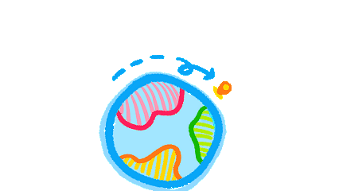
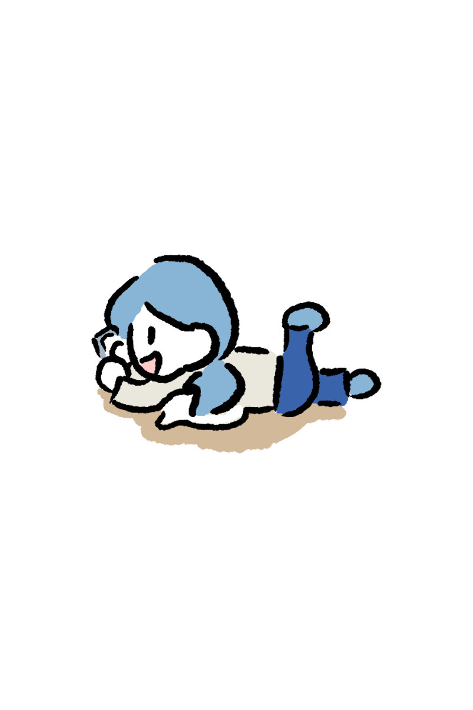
子涵就是这部分被搁置需求的一个具体样本。她说自己也曾长期浸在短视频的信息流里，被密集的笑点和反转推着不停上滑，放下手机后只剩更强烈的空洞与独处的空旷感。于是在打扫卫生、公园散步、或是失眠不想面对空荡房间的时刻，她会戴上耳机，点开一期五六十分钟的播客，让一段完整的对话填满房间的寂寥。
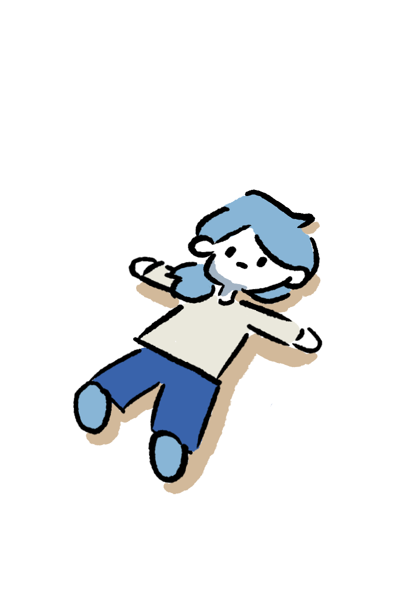
如果说短视频满足的是即时的信息获取与情绪刺激，那么播客提供的，则是一种更长时、更主动、更深入的内容体验。媒介特性的差异，也塑造了不同的表达方式和需求结构。
为了填补这种碎片化带来的"空心感"，越来越多年轻人像子涵一样走向长音频。播客正在撕掉"小众圈层"的标签，逆着快内容的浪潮快速扩容。
播客出圈纪
2025 — 2026 播客产业年鉴
轻触翻页
01
01 / 10
2025年7月
B站推出视频播客出圈计划，投入10亿级冷启动流量扶持长对话视频播客。
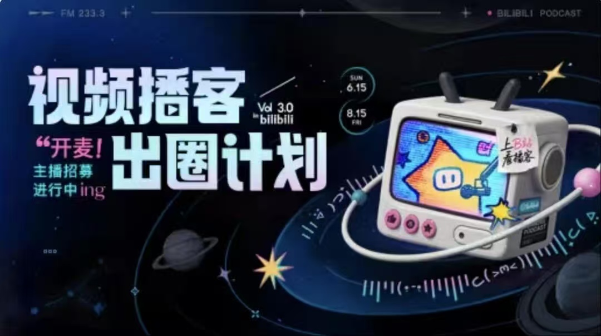
03
03 / 10
2025年11月
CPA中文播客文化节举行
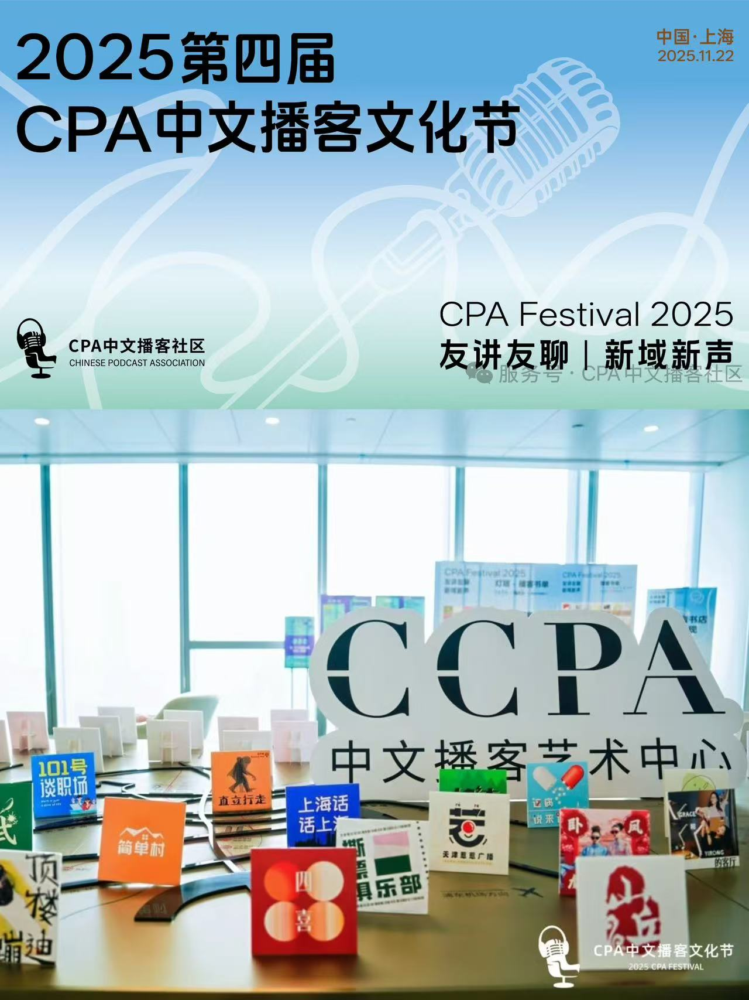
05
05 / 10
2026年1月
超级内容获300万天使轮融资，播客经纪专业化制作人模式起步。
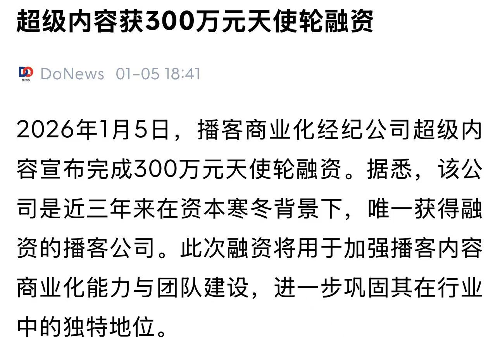
07
07 / 10
2026年3月
腾讯上线播客新势力分账计划，长视频平台正式入局视频播客。
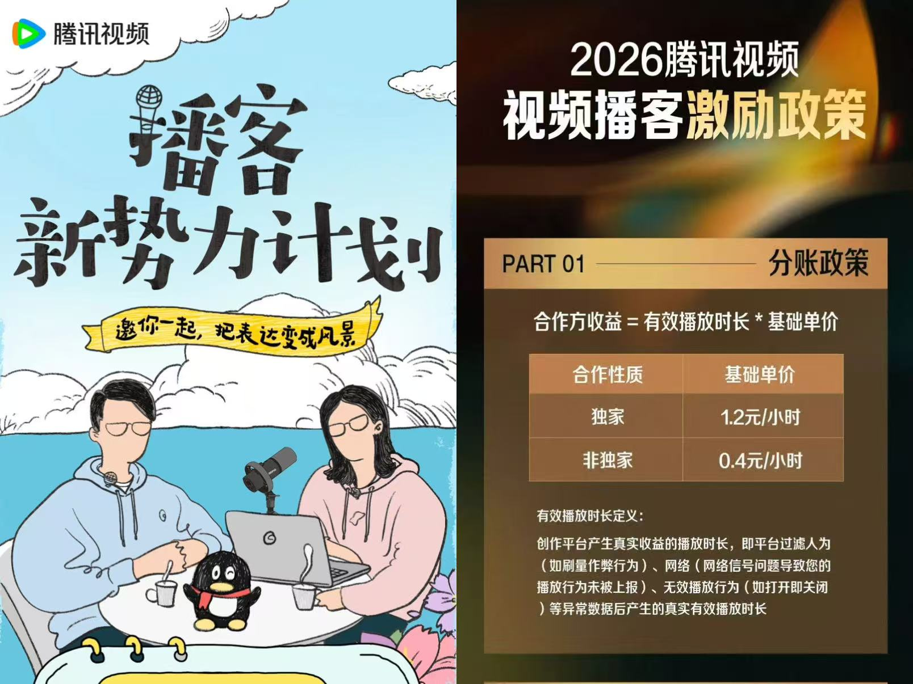
09
09 / 10
2026年4月
小红书发起视频播客开麦计划
02
02 / 10
2025年8月
罗永浩《十字路口》、鲁豫《慢谈》等头部名人视频播客上线。Q1 B站视频播客用户超4000万，消费时长259亿分钟，实现大众破圈。
04
04 / 10
2025年11月
发布《CPA中文播客白皮书2026》披露2025中文播客听众突破1.5亿人
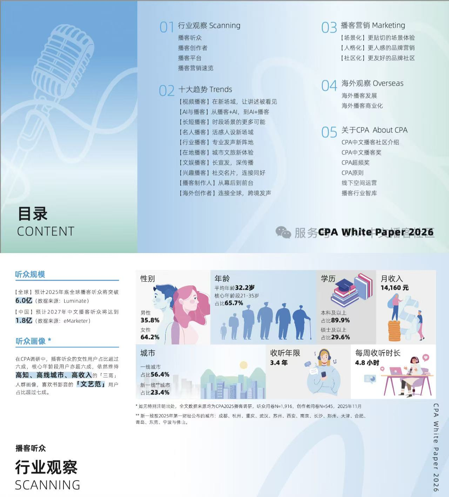
06
06 / 10
2026年1月
章泽天《小天章》等名人播客上线，引发全网传播。
08
08 / 10
2026年3月
华夏基金x小宇宙首届播客节"红火开麦日"大型官方线下播客节落地，播客文化走向线下大众场景。
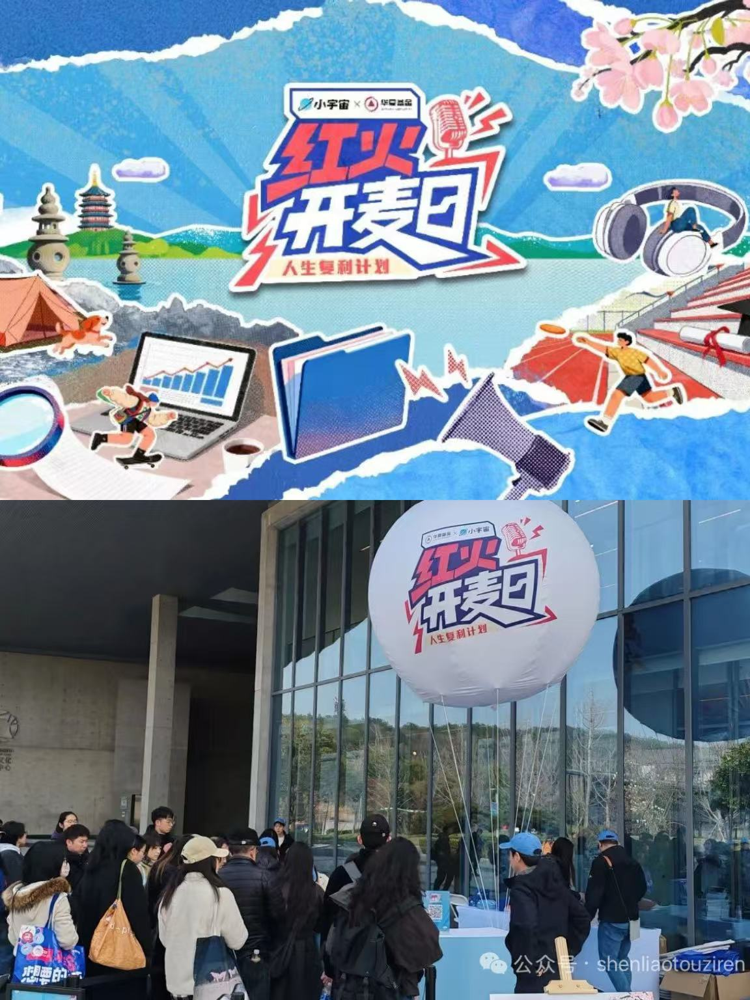
10
10 / 10
2026年6月
《岩中花述》小宇宙订阅量破400万。
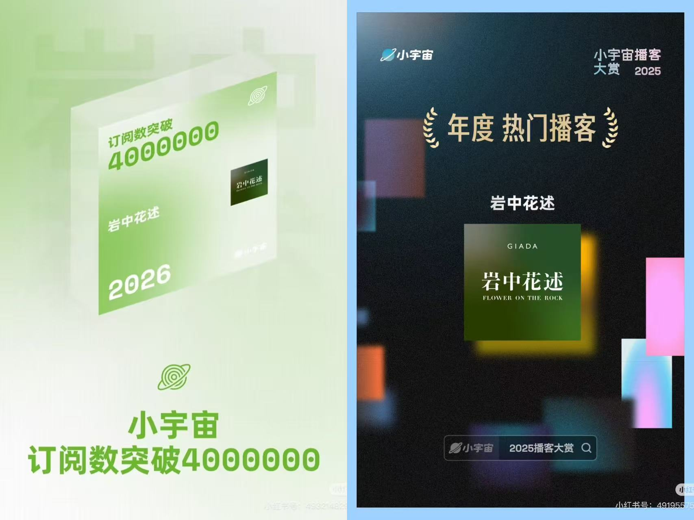
这种增长是需求端与供给端的双向奔赴。从小宇宙平台发布的《2025播客生态白皮书》来看，平台2024年新增节目46,196档，2025年激增至64,032档；单集节目年发布量从48.4万集增长至69.6万集。与短视频的低门槛、海量生产不同，播客需要完整的表达链条、相对专业的制作和更长的创作周期，它在"慢"的属性下依然保持高速扩容，本身就证明了市场需求的刚性。
小宇宙平台内容增长
* 点击查看详情 | 数据来源：小宇宙平台
更具粘性的是"留存数据"。在播客收听行为中，每天收听超过30分钟的用户合计高达76.2%，其中收听1-2小时的占22.5%，2小时以上的重度用户达16.3%。在收听年限上，超70%的用户已持续收听2年以上。
用户每日收听时长分布
* 每天收听超过30分钟的用户合计高达76.2%
当子涵在洗碗时打开播客，她并不是专门"抽出时间"来收听，而是让声音填满了原本空白的劳动时间。这也是播客用户的普遍状态：他们不是被算法捕获的被动受众，而是主动选择声音、主动分配注意力的"声音原住民"——在被短视频切割得支离破碎的一天里，他们用一段连续的声音，给自己拼凑出一块完整的时间。
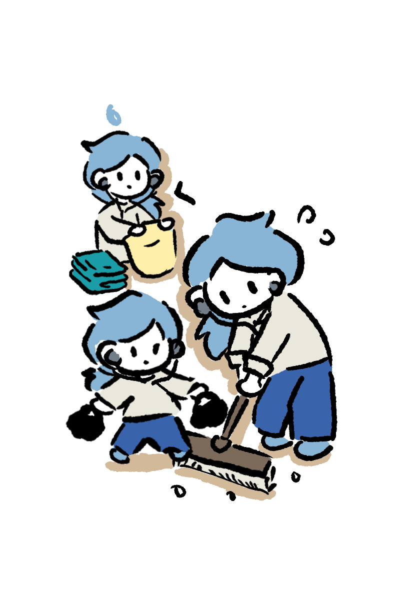
究竟是怎样一群人，在主动对抗"一分钟时代"的引力？行业大数据勾勒出了清晰的播客听众画像：高度集中于一线与新一线城市，以20-35岁青年群体为核心，本科及以上学历占比超七成，普遍从事互联网、金融、文化创意等知识密集型行业。
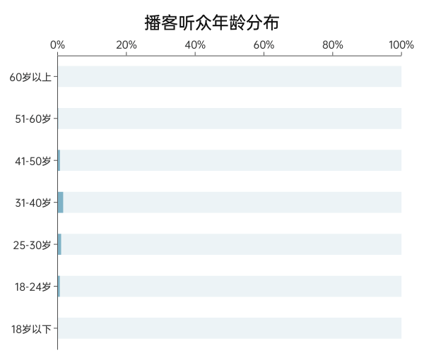
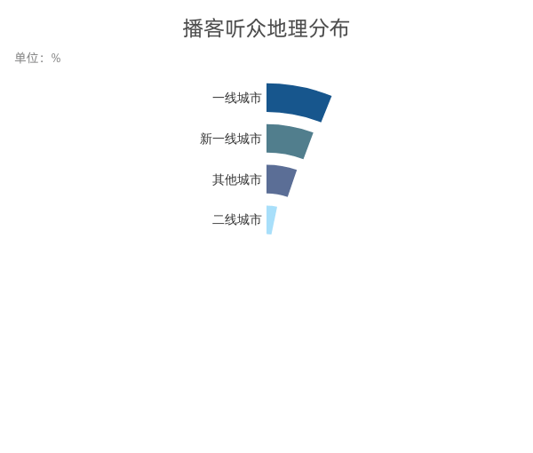
这群被贴上"高学历、大城市、青年"标签的听众，在现实中往往是"效率体系里的苦工"。他们是同时承受着职场效率压力、成长焦虑与情感原子化隐痛的"城市游牧民"：
子涵的一天
中国播客用户收听场景分布 · 点击时间节点查看数据
14:00 工作/学习

数据来源：嘉世咨询《2025中国播客行业现状与发展趋势报告》
和多数一线城市青年一样，子涵过着独居生活。根据《中国人口普查年鉴2025》，一线城市青年独居率已超40%，私人生活长期处于"无人对话"的状态；此前的职场经历里，她日均工作时长超9小时，成长焦虑与职业不确定性是普遍情绪。他们身处高度流动的社会关系里，社交成本高、深度连接少，情感生活呈现出明显的原子化特征。
对像子涵一样独居打拼的城市青年来说，播客的慢节奏，是碎片化生活里的新型高效模式。短视频带来瞬时快感与零散资讯，而一小时不间断的播客对话，重构了通勤、家务、失眠等无效边角时间，将其转化为情绪补给、知识吸收的精神空间，实现生活缝隙里的自我疗愈与成长。
伴随性是播客突破时长限制的核心特质。区别于强视觉绑定的短视频，播客作为背景媒介，适配低注意力场景，不占用主线行为，得以承载长篇深度对话。听众不必专门预留一小时观看收听，即可在日常琐事中完整听完一期节目。
在被工作与效率支配的日常里，长播客为年轻人提供了低成本的精神自留地，让连续思考与深度陪伴，重新回归碎片化的数字生活。
行业数据展现了播客有多热并从媒介特性角度简单解释了浅层原因，却无法从青年自身角度出发回答核心问题：为什么年轻人愿意为一小时的长音频停留。
为了理解长声音背后更深的吸引力，本文对12023条播客评论进行了文本挖掘分析，包括主题聚类、评论长度分层、问题评论识别、情绪分析以及关键词共现网络分析。
结果显示，播客评论区早已超越单纯的内容反馈场域，逐渐演变为青年表达情绪、讨论人生与寻找认同的公共空间。综合行业规模、听众画像与这12023条评论的分析结果可以发现，播客之所以能"逆短而长"，核心在于它满足了青年人在过度轻量化的信息环境中，对"连续体验"的底层渴求。
这种渴求具体表现为三重锚点：自我的连续性、陪伴的连续性、认知的连续性。
数据解读：仅有37%的评论直接围绕节目内容展开，其余评论更多延伸至个人生活与现实经验。其中，价值观与意义类讨论占25.9%，自我认知与认同类讨论占13.1%，成长发展类占9.5%。
关键词共现网络（简化版）
* 节点大小反映关联强度，点击节点查看分析
数据解读：关键词共现网络进一步揭示了这种讨论结构：网络中心并非"节目"或"主播"，而是"自己"。围绕"自己"，连接最紧密的词语包括"生活""工作""关系"等现实议题。
换句话说，听众听播客，最终的落脚点不是节目本身，而是借由节目内容审视自己的生活。
短视频倾向于给出标准化答案和即时刺激，而播客更像"持续性的经验分享"。一小时的对话里，主播不仅输出观点，更会完整呈现观点形成的过程、个人的经历与困惑、甚至是犹豫和自我怀疑。听众在长时间的倾听中，会在他人的人生故事里映照自己，不断校准和确认自我认知。
在身份流动加速、人生路径愈发多元的今天，年轻人不再有统一的人生模板，"我是谁、我该过怎样的生活"成为普遍的困惑。短内容无法回答这个问题，而播客通过连续的、完整的个体经验分享，给年轻人提供了一面镜子——他们在别人的故事里，慢慢拼凑出自己的答案。身份认同的需求，正是长播客持续吸引年轻人的核心动力。
独居、高压、高社交消耗，已是当代都市青年的常态生存处境。播客独特的声音媒介，自带真实在场感：主播语气、对话节奏、语气停顿与细碎声响，共同搭建起一处虚拟共处空间，消解独处时的孤独感。
这种陪伴是低负担的陪伴：无需即时回应、无需维持社交礼仪、无需额外消耗情绪精力，听众可以自在沉浸其中，获得温和的情感支撑。正如许多听众在评论里留下的心声："谢谢主播陪我度过最难熬的一段时间""做饭时听着播客，家里就不再只有我一个人"。
在短视频评论区，"哈哈哈""绝了"及重复性梗言梗语构成了最常见的表达方式；而在播客评论区，大量数百字甚至上千字的长评论却持续出现。数据显示，在12023条评论中，超过100字的长评论达到1915条，占总评论量的15.93%。
数据解读：随着评论变长，用户讨论的对象也在发生明显变化：在3696条短评论中，讨论主要集中于主播节目本身的内容反馈；在6413条中评中，讨论逐渐延伸至娱乐互动、社会观察，教育成长；而在占比15.93%的1915条长评论则深度聚焦于自我认知，人生选择，工作及社交。
在12023条评论中，超过100字的长评论达到1915条，占总评论量的15.93%。许多用户会在评论区详细记录一次失恋、一段职业迷茫，甚至某个难以言说的人生阶段：
这些看似是在评论节目，实际上更像是讲述自己。
情感分类流向桑基图
* 流带宽度代表情感提及次数（一条评论可能有多种情感混合）
数据解读：在所有情绪表达中，进一步观察情绪与评论长度的流向关系可以发现，相比喜悦更多停留在短评层面，共鸣、中性、感动、鼓励等情绪更容易流向中长评论。
情绪分析结果也印证了这一点，那些最容易促使年轻人写下长篇评论的，并不是简单的"喜欢"或"点赞"，而是被理解、被触动以及被看见的感受。
这些评论背后，体现的是一种从收听到情感陪伴与共鸣、再到自我讲述的过程。
相比强调即时反馈、流量竞争和高互动压力的短视频平台，播客社区由于圈层相对稳定、互动节奏更慢，情感延展性更强，也降低了表达门槛，使深度叙事成为可能。
年轻人并没有失去表达欲，而是在寻找更适合表达的空间。在播客里讲述自己的经历，并在陌生人的回应中获得共鸣，个体得以确认：自己的情绪并非孤岛。
深度表达与情感陪伴需求，使播客评论区逐渐成为青年内容反馈的重要场域。
除了讲述自己，年轻人也在不断追问人生，追问社会，追问世界。
在识别出的849条提问类评论中，很少有用户询问节目何时更新，反而高度聚焦于：自我认知，工作职业，情感关系，未来规划，社会生活，这些问题共同构成了一副当代青年的现实困惑星图。
青年现实困惑星图
基于 12,022 条播客评论中 849 条问题类评论的主题分析
* 星星大小与亮度代表占比 · 点击主星查看分类，点击卫星查看具体问题
评论区中反复出现的"为什么""怎么办"，折射出年轻人面对现实生活时普遍存在的不确定感。
在信息极度丰富的今天，年轻人并不缺少答案。真正稀缺的，是理解现实的方法。算法推荐不断将知识压缩成几分钟的视频和标准化结论，但职业选择、亲密关系、人生意义等复杂议题，从来都不存在统一答案。
与短视频提供确定性答案不同，播客更像一种开放式思考。一场持续数十分钟甚至数小时的讨论，不仅输出观点，更完整呈现提问、怀疑、争论与反思的过程。听众得以跟随主播一起经历思考，并在不同经验与观点之间形成自己的判断。
他们寻找的，或许从来都不是答案。而是一种理解现实、解释经验并赋予生活意义的方法。
认知与意义需求，构成了青年持续收听长播客的深层动力。
从情绪共鸣到人生讲述，从经验分享到现实追问，12023条评论勾勒出青年与播客互动的完整路径。年轻人来到播客，最初是在听节目，最终却开始讲述自己、回应他人，并在持续对话中寻找理解现实的方式。播客所连接的，不只是声音，更是一种共同思考的可能。
这也回答了为什么播客能够独立于短视频，在快时代逆短而上占据一部分内容精神消费市场。
满足需求与社交关系：两种媒介的精神路径
③ 满足需求
多元深层
身份认同
情感支持
认知成长
播客承载的不只是信息消费，更是用户构建自我认同与情感支持的精神空间。
即时满足
娱乐消遣
情绪刺激
信息获取
需求停留在表层，以满足即时快感为主。
⑤ 社交关系
圈层共同体
基于共同兴趣与价值，长期陪伴与信任。播客构建了一种深度连接的社区关系。
从反复谈论"自己"，到持续讲述个人经历，再到不断追问"怎么办"，12023条评论共同勾勒出当代青年的精神图谱：他们在持续对话中确认自我，在深度表达中获得情感支持，在开放讨论中寻找理解世界的方法。
这些精神需求，直接催生出以圈层、情绪、认知为核心的新型青年消费。当消费不再局限于商品的使用价值，更多转向情绪价值与精神价值时，播客代表的正是一种新的青春经济形态。
从消费大盘来看，青年精神与情绪消费市场正在高速扩容。据艾瑞咨询《2025中国青年情绪消费研究报告》，2022至2024年，国内青年情绪与精神消费市场规模从1.63万亿元增长至2.31万亿元，行业预测2029年将突破4.5万亿元；超九成青年认可情绪的附加价值，近六成年轻人愿意为情绪体验、精神满足付费。
青年精神与情绪消费市场规模
* 单位：亿元 · 滚动至视图时播放动画
在供给端，年轻人更是完成了从"单纯消费者"到"内容创造者"的跨越。国内UGC青年主播占比超六成，平台热度前十的播客中，有9档由个人独立制作；小宇宙2025年全年新增64032档节目，背后的创作主力同样是年轻群体。
2020年，还在广告公司工作的子涵陷入了存在主义危机，反复追问"我每天都在干什么"。正是带着这种自我困惑，她拿起麦克风和朋友录制播客，在深度交谈中梳理模糊的思绪。对她而言，麦克风就像"观察者"，能让混沌的想法变得确切，每一期录制的过程，都是一次自我整合与确认的过程。
年轻人为播客付费，买的从来不是60分钟的声音，而是一个可以慢下来、认真倾听、自由表达与深度思考的自我空间。本质上，这是年轻人用消费投票，为自己选择一种更完整、更有温度的内容生活方式。
尽管播客逐渐不再小众，青年人也在播客中得到了需求的满足。但当前的播客行业仍存在明显的局限，它往往只是青年精神需求的"缓冲带"，而不是解决困境的"解药"。
第一，内容同质化与伪深度风险。2025年小宇宙全年新增64032档节目，但职场、原生家庭、情绪内耗三大题材占比超62%，大量节目套用同类叙事模板；平台数据显示40%用户因内容重复取关，解构类节目完播率同比下滑28%。大量播客集中在职场、情感、自我成长等话题，观点重复、案例趋同，很多"深度对话"本质上是情绪共鸣的复读，并未提供真正的认知增量；部分节目用"聊天感"包装松散的内容，看似轻松，实则信息密度极低，本质是另一种形式的"电子榨菜"。
第二，圈层固化与回音室效应。播客用户高度集中于高学历城市青年，话题语境、价值取向高度趋同，长期收听反而容易强化认知闭环，陷入"同温层回音室"——你听到的，往往是你本来就认同的观点；你获得的共鸣，很多时候只是同类人的互相确认。
第三，无法真正解决现实困境。播客能提供情绪陪伴和认知启发，但无法改变职场压力、高生活成本、社交原子化的现实。它可以让一个难熬的夜晚不那么空，却不能让第二天的工作压力消失；它可以让你在别人的故事里获得安慰，却不能直接解决你的职业迷茫与情感困境。
换句话说，长播客是碎片化时代的"精神创可贴"，它能缓解疼痛，却不能治愈伤口。但即便如此，它的价值依然成立——在一个所有人都被推着往前走的时代，能有一个小时让你慢下来、听完整一段对话、想一想自己的生活，本身就已经足够珍贵。